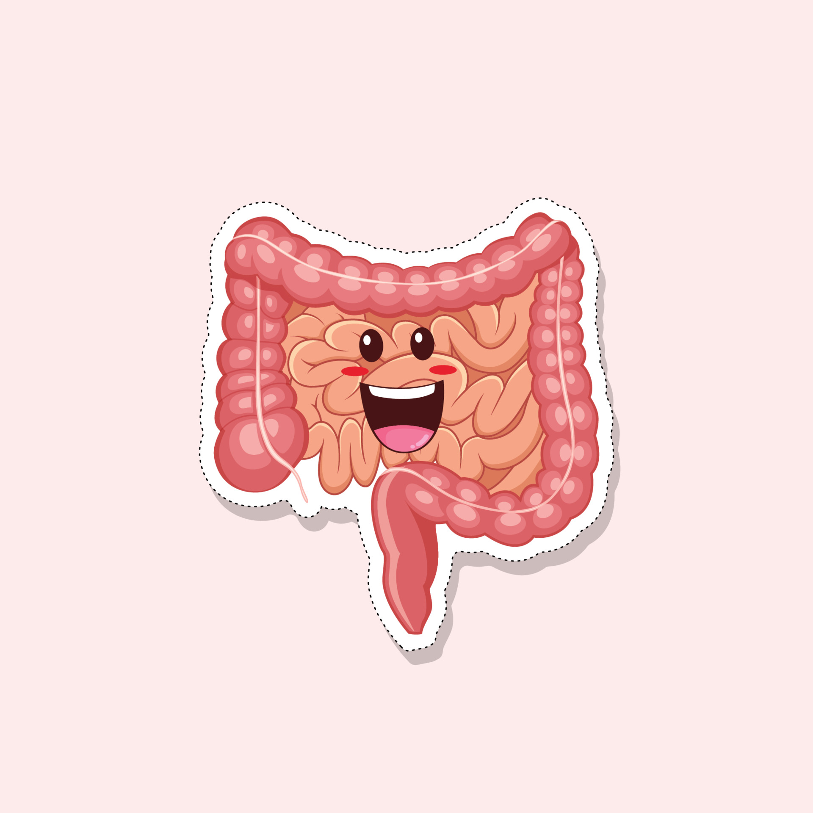

Materi Pembelajaran
Ayo, pelajari materi diwabah ini !
Pilih salah satu materi untuk dipelajari dengan menekan tombol
"Ayo Pelajari"
Iklan Media Cetak
Apa yang dimaksud dengan iklan media cetak dan fungsinya ?
Organ Pencernaan Manusia
Apa saja bagian-bagian dari sistem pencernaan pada manusia ?Tangga Nada
Apa saja ciri-ciri lagu tangga nada mayor dan tangga nada minor ?Evaluasi Pemahamanmu
Ayo, kerjakan kuis !
Evaluasi pemahamanmu mengenai materi yang sudah dipelajari dengan mengerjakan
kuis ini
Kolom Diskusi
Bagikan pendapatmu dan berdiskusi dengan peserta lainnya, tentang materi yang sudah kamu pelajari
Gusti Ayu Nyoman Tisia Purnianingrum
1811031102
Jurusan : Pendidikan Dasar
TUJUAN PEMBELAJARAN 1. Dengan membaca materi pada e-mading, siswa mampu mengenal dan menyebutkan unsur-unsur iklan dengan benar. 2. Dengan mengamati contoh iklan pada e-mading, siswa mampu menemukan informasi yang terkandung dalam iklan dengan benar. 3. Dengan membaca materi pada e-mading, siswa mampu mendeskripsikan organ-organ pencernaan pada manusia dengan benar. 4. Dengan mengamati video dan diskusi pada e-mading, siswa mampu membuat diagram alur proses pencernaan manusia dengan benar. 5. Dengan membaca materi pada e-mading dan bimbingan guru, siswa mampu menguraikan ciri-ciri lagu bertangga nada mayor dan minor dengan benar. 6. Dengan membaca materi dan mengamati contoh lagu, siswa mampu menyanyikan lagu sesuai dengan tangga nada dengan benar.Tema 3 (Makanan Sehat) Subtema 1 ( Bagaimana Tubuh Mengolah Makanan) Pembelajaran 2 Kompotensi Dasar (KD) Bahasa Indonesia Kompetensi Dasar (KD) 3.4 Menganalisis informasi yang disampaikan paparan iklan dari media cetak atau elektronik 4.4 Memeragakan kembali informasi yang disampaikan paparan iklan dari media cetak atau elektronik dengan bantuan lisan, tulis, dan visual IPA Kompetensi Dasar (KD) 3.3. Menjelaskan organ pencernaan dan fungsinya pada hewan dan manusia serta cara memelihara kesehatan organ pencernaan manusia 4.3. Menyajikan karya tentang konsep organ dan fungsi pencernaan pada hewan atau manusia SBdP Kompetensi Dasar (KD) 3.2 Memahami tangga nada. 4.2 Menyanyikan lagu-lagu dalam berbagai tangga nada dengan iringan musik